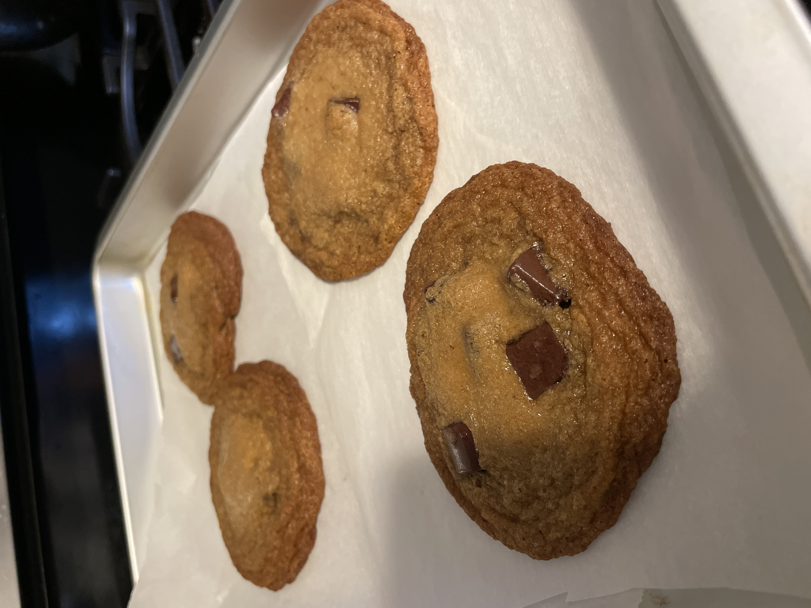

Browned Butter Chocolate Chip Cookies

Description
This is my new favorite recipe for chocolate chip cookies, from Bon Appetit's Chris Morocco.
I always make sure to have dough balls in the freezer for a morale-boosting weeknight treat!
Ingredients
- 200g all purpose flour
- 4g kosher salt
- 4g baking soda
- 169g unsalted butter, divided
- 200g dark brown sugar
- 50g granulated sugar
- 1 egg
- 2 egg yolks
- 2 teaspoons vanilla extract
- 170g bittersweet chocolate chunks
Steps
- Preheat oven to 375 degrees farenheit. In a medium bowl, whisk together the flour, salt, and baking soda.
- In a small saucepan, brown 113g (~1 stick) of butter. If you've never browned butter before, this is a great video. Transfer to a medium bowl to cool 1 minute.
- Cut remaining butter into small pieces and add to bowl of browned butter.
- Once the remaining butter has melted, add both sugars and whisk until no lumps remain.
- Add egg and egg yolks and whisk until smooth. Whisk in vanilla extract.
- Fold dry ingedients into wet using a rubber spatula until no dry spots remain, then fold in chocolate chunks.
- Put mixture in the refridgerator to hydrate and chill, about 5 minutes.
- Portion into 3 tablespoon-sized doughballs onto a parchment-lined baking sheet. Bake until deep golden-brown, 8-10 minutes.
Note: If baking from frozen, add 3-4 minutes to cook time.
Home